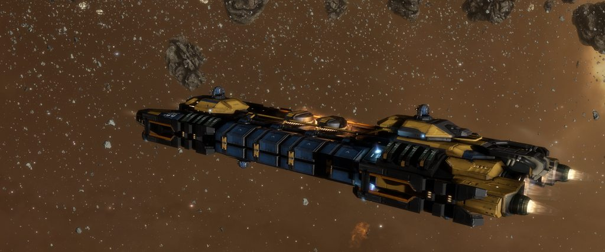
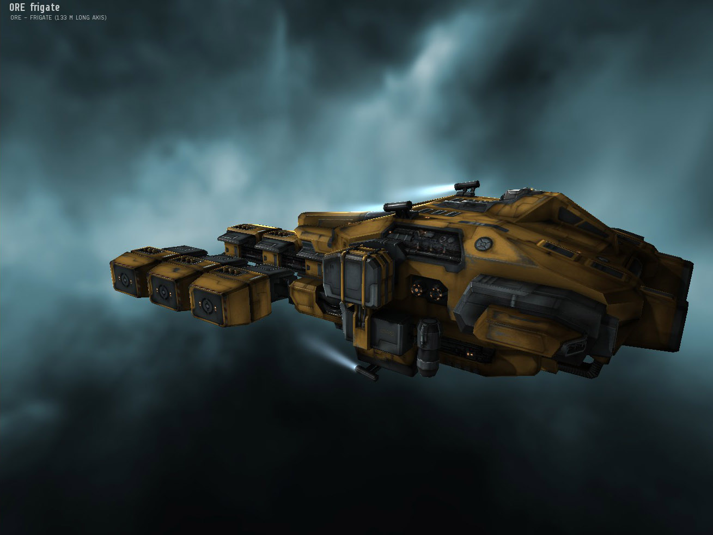

| Admins | Rules | Home | Q&A | How To Become A Member |
19 Nov 2021, 14:56
One of our anonymous members e–mailed us this beautiful example of frog–like aliens' speech. (Before you ask: aliens were aware of audio–recording.) You can check it down below!
Also, they kindly answered our questions about their meeting with this specific race, so stay tuned for a story of two chairs, one spaceship and various communication attempts.
15 Nov 2021
loading...
13 Nov 2021
Many of you already know that, but we decided to post it officially:
We gained a lot of fame and reputation among Contact-interested community, as well as a lot of data, connections and plans about future of this organization, so we, as admins, decided that now is the time to realize some of them: we are going to open a new, more efficient site to hold all new data and some new features that are now in development. We will neither delete nor abandon this one, 'cause we love it and it's style dearly, but our old admins' main attention will be focused from now on more detailed and scientific news and topics. They will be connected to the more humorous AAOACTS posts, so do not shy away from here!~
You may ask why we typed “old admins” in text above, and we are happy to answer: AAOACTS are now seeking new blood to power our first site admins' ranks! Click here to have a chance of becoming one: the form itself
— Astaire, AZi and lanc
29 Oct 2021
loading...
28 Oct 2021
Not so long ago our colleagues from “Not Only UFO” shared with us their information about alien race with a name of “Urotogorah”. With the power of cooperation and sheer determination, we analized all we had about them and are now ready to show the world the results not only on our own sites, but in official press. Check out tomorrow's edition of “The Post” and next week's “Utopia” special (pre–order available)! I would also like to add that this information will appear on our second site, albeit much later — on November 17.
We will discuss Urotogorah's form of government, traditions, language (with a special guest — our friend Maia Troverc) and their habitual gestures, that can greatly help you with understanding of Urotogorah's individual emotions.
— lanc
21 Oct 2021
loading...
18 Oct 2021
loading...
11 Oct 2021
loading...
9 Oct 2021
Today is the good day for our spaceship nerds, because some satellites' cameras have spotted, as CENC presumed, the Farrag Union merchant/mining ships. Shamefully, for now I only have a few pictures from the bunch that were originally taken, but there will be an update post with the rest of pics as soon as my hands will be on them.
As you can see, storage facilities of these ships are greatly enlarged, so we can definately say that they are not of the attacker type, but we can not understand their structure fully. lanc is sure that he had spotted familiar mining tools and said that whatever those ships are, their importance are not great. AAOACTS already contacted some specialists to gain more information.
Pictures themselves:


or
09-2021-c2-h700-65-39
09-2021-h65-51-801-47
— Astaire
1 Oct 2021
loading...